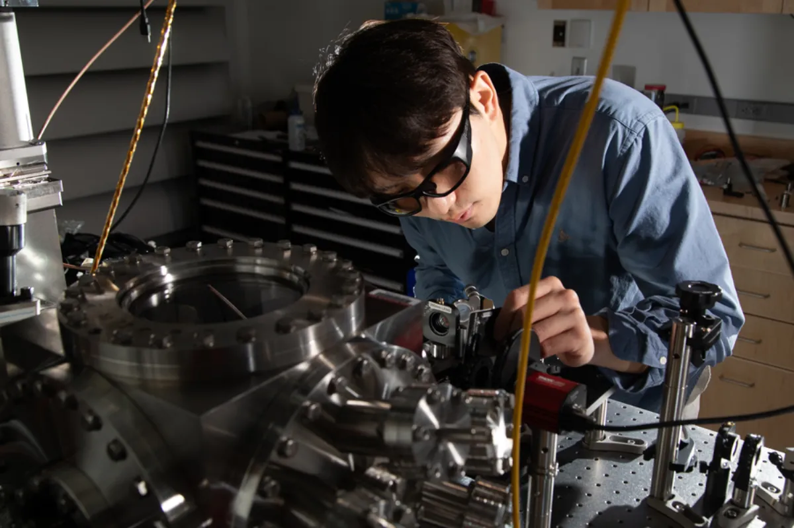

Dongchel Shin
PhD Candidate, Mechanical Engineering, MIT

About
I am a fifth-year PhD candidate in Mechanical Engineering at MIT, working in the Quantum & Precision Measurements Group with Prof. Vivishek Sudhir. I build optical and optomechanical measurement systems that operate at the quantum limit, from laser-cooled, centimeter-scale torsional oscillators to quantum-enhanced frequency-comb metrology, with the long-term goal of probing macroscopic quantum phenomena and the interface between quantum mechanics and gravity.
My work bridges experiment and theory: I design and build the optical, mechanical, and electronic systems behind these experiments, and use quantum optics, stochastic processes, and estimation theory to understand their fundamental limits. In 2025 I was a research intern at NTT Research PHI Lab, working on quantum-enhanced frequency-comb metrology.
Before MIT, I spent four years at KAIST as a research associate (while fulfilling military service) with Prof. Seung-Woo Kim and Prof. Young-Jin Kim, building frequency-comb-based time/frequency standards and precision measurement systems. I received my B.Eng. from Tokyo Institute of Technology and my M.S. from the University of Tokyo.
News
Selected Publications
All publications →Technical Skills
- Optics & lasers
- Laser frequency and intensity stabilization, optical cavities, optical frequency combs, phase locking, fiber and free-space optics
- Control & automation
- Multi-loop PID feedback, FPGA-based real-time control, actuator control and automation of optical setups
- Precision measurement
- Quantum-limited optical readout, laser cooling of mechanical oscillators, low-noise detection, environmental stabilization (10 mK)
- Theory & modeling
- Quantum optics, stochastic processes, estimation theory, noise modeling
Education
- 2022 – presentPh.D., Mechanical EngineeringMassachusetts Institute of Technology · Advisor: Prof. Vivishek Sudhir
- 2016 – 2018M.S., Information Science & TechnologyThe University of Tokyo · Advisor: Prof. Shoji Takeuchi
- 2013 – 2016B.Eng., Summa Cum Laude (in 3.5 years)Tokyo Institute of Technology
Experience
- 2022 – presentGraduate Research Assistant, MITQuantum measurement and control of macroscopic torsional oscillators
- 2025 (May – Sep)Graduate Intern, NTT Research PHI LabTheory and experiment for quantum-enhanced frequency-comb metrology
- 2018 – 2022Research Associate, KAISTOptical frequency comb-enabled precision measurements
Honors & Awards
- 2024 – 2026MathWorks Engineering FellowshipMIT
- 2017Hatakeyama AwardThe Japan Society of Mechanical Engineers
- 2016 – 2018Kwanjeong Educational Foundation ScholarshipSouth Korea
- 2013 – 2016Korea–Japan Joint Government Scholarship
Selected Talks
- 2026CLEO 2026, Charlotte, NCQuantum-limited readout and feedback cooling of a centimeter-scale torsional oscillator
- 2025APS Global Physics Summit, Anaheim, CAActive radiation-pressure cooling of a cm-scale torsion pendulum
- 2022CLEO 2022, San Jose, CATerahertz frequency synthesizer referenced to an ultra-stable optical cavity